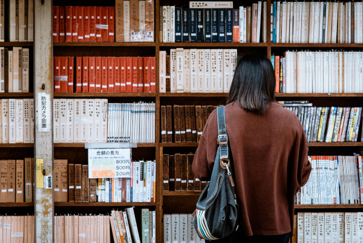
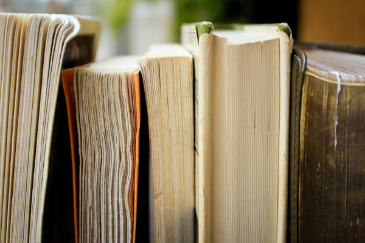

A importância da literatura para o indivíduo
A importância da literatura varia para cada pessoa, mas é inegável que a literatura edifica o ser humano, um livro pode modificar uma vida para sempre, a leitura desperta nosso senso crítico, as palavras de um livro brincam com nossos sentimentos, nos desafia a sentir, ser humano, nos faz pensar e questionar. Para a mineira Conceição Evaristo que escreveu Canção para ninar menino grande e Olhos d'água, a escritora afirma em uma entrevista que "O exercício da literatura, pra mim, é a minha maneira de não adoecer. Quando eu falo de não adoecer, estou falando mesmo desse adoecimento emocional. Porque a arte, ela é uma válvula de escape. E a literatura pra mim, essa criação, é a possibilidade que eu tenho de sair de mim mesma de indagar o mundo, de inventar um outro mundo, de apresentar a minha discordância com esse mundo."
No tempo em que vivemos, ler é um ato de resistência. A leitura forma nosso senso político e molda nosso caráter. Mais do que uma questão cultural, essa é uma responsabilidade coletiva, que envolve escolas, famílias, comunidades e políticas públicas.
Formas válidas de literatura
Livros físicos
Livros impressos é a forma mais tradicional de leitura, geralmente contém texto e podem ter imagens ou ilustrações.
Livros digitais
Conhecido também como e-book, são arquivos digitais que possuem textos, imagens, ilustrações, semelhante a livros impressos, mas que pode ser lido em dispositivos eletrônicos como computadores, tablets, smartphones e leitores digitais.
Audiolivro
Conhecido popularmente como audiobook, é um livro lido em voz alta, gravado em formato de áudio. Pode ser ouvido em vários tipos de dispositivos eletrônicos. O audiolivro é uma ferramenta essencial para pessoas cegas e com baixa visão, uma vez que esse formato de livro democratiza o acesso à cultura.
Produção desenfreada de livros
A maioria dos livros comprados são lidos uma única vez, então são deixados em uma estante ocupando espaço quando outras pessoas poderiam lê-los também, ou pior, não são lidos e permanecem intocados por uma vida toda antes que outra pessoa tenha chance de ler.
A forma como o meio ambiente é afetado
A produção em massa de livros impressos pode ter um impacto ambiental significativo, devido à necessidade de matéria-prima como madeira e papel. A produção de livros impressos exige o abate de milhões de árvores e emite grandes quantidades de dióxido de carbono que contribui seriamente para mudança climática, pois intensifica o efeito estufa na atmosfera.
A falta de incentivo a literatura no Brasil
A falta de fomento ao hábito de ler não é apenas uma questão familiar ou escolar, ela reflete a prioridade dada a cultura na sociedade brasileira. O estudo mostra que muitos entrevistados reconhecem a importância de ler, mas não encontram motivação ou tempo para aderir o hábito em em suas rotinas. Isso evidencia uma lacuna que não está sendo preenchida nem pelo ambiente doméstico, nem pelas políticas públicas.
"A leitura não é só uma atividade prazerosa. Ela é uma ferramenta de formação crítica, de exercício da empatia e de compreensão do mundo. Sem estímulo, as pessoas deixam de se conectar com essas possibilidades", afirma Pissolati. O especialista destaca o papel essencial das escolas nesse cenário, mas alerta: "Sozinhas, as instituições de ensino não conseguem reverter esse quadro. É necessário um esforço conjunto entre famílias, comunidades e o Estado."
Livros são inacessíveis para a maior parte da população
Já entre os não compradores de livros, o principal motivo que leva à desmotivação é o valor atribuído ao produto, apesar da leitura ter sido considerada um hábito importante por 60% dos perfis não consumidores de livros. Dos brasileiros que não adquiriram nenhum livro nos últimos meses, 35% reclamaram dos preços, e essa percepção perpassa todas as classes sociais. A falta de tempo, seguido por ter acesso a livros digitais gratuitos e pdfs também foram apontados como fatores que desmotivam a compra.
Próxima página